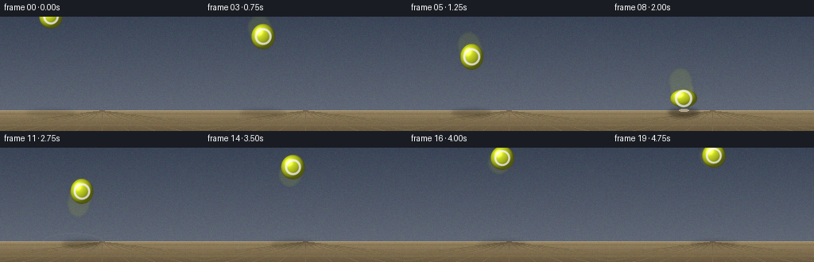
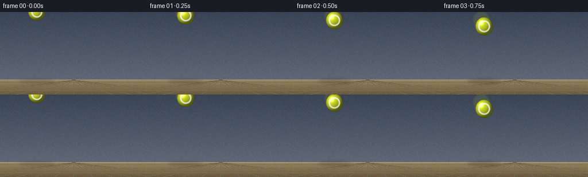

CODING AGENTS AS PIXEL WORLD MODELS
traex/Seed-2.1-Pro-0915 · phygen_028
点击播放 · 原生 RGB 像素
逐轮保存的候选
回放视频、检查图与代码变化。
每份候选均可单独播放。实际图片检查记录在下方工具轨迹中。
候选 01播放与检查图
点击播放 · 原生 RGB 像素


展开代码变化
--- 上一保存版本
+++ 本次保存版本
@@ -0,0 +1,236 @@
+"""Text-to-video: an elastic tennis ball slammed onto the ground.
+
+Pure numpy/PIL generation. Produces 20 RGB frames (256x144, 4 fps) and
+saves them through artifact_io.save.
+"""
+import math
+import numpy as np
+from PIL import Image, ImageDraw, ImageFilter
+
+import artifact_io
+
+W, H = 256, 144
+N_FRAMES, FPS = 20, 4.0
+DT = 1.0 / FPS
+SS = 4 # supersampling factor for the ball patch
+
+GROUND_Y = 118
+R = 15.0
+G = 30.0 # gravity, px / s^2 (screen coords, y down)
+T_BOUNCE = 2.0 # impact time
+RESTITUTION = 0.92
+X0, VX = 64.0, 14.0
+Y_GROUND_CENTER = GROUND_Y - R
+
+# Solve the pre-bounce vertical throw so the ball's edge reaches the floor.
+VY0 = (Y_GROUND_CENTER - 0.5 * G * T_BOUNCE ** 2) / T_BOUNCE
+V_IMPACT = VY0 + G * T_BOUNCE
+VY_AFTER = -RESTITUTION * V_IMPACT
+
+BALL_RGB = (216, 232, 38)
+SEAM_RGB = (244, 244, 232)
+
+
+def ball_state(t):
+ """Return center (x, y), vertical velocity and squash envelope q."""
+ x = X0 + VX * t
+ if t <= T_BOUNCE:
+ y = 0.5 * G * t * t + VY0 * t
+ vy = VY0 + G * t
+ else:
+ u = t - T_BOUNCE
+ y = Y_GROUND_CENTER + VY_AFTER * u + 0.5 * G * u * u
+ vy = VY_AFTER + G * u
+ q = math.exp(-((t - T_BOUNCE) / 0.10) ** 2) # 1 at impact, fades fast
+ return x, y, vy, q
+
+
+def deform_radii(vy, q):
+ """Squash on contact, stretch along fast vertical motion; conserve area."""
+ stretch = 1.0 + 0.16 * min(1.0, abs(vy) / 80.0) ** 2
+ squash = 1.0 - 0.34 * q
+ sy = stretch * squash
+ sx = 1.0 / math.sqrt(sy) # area conservation: sx * sy ~ 1
+ return R * sx, R * sy
+
+
+def build_background():
+ bg = Image.new("RGB", (W, H))
+ px = bg.load()
+ top = np.array([58, 68, 86])
+ mid = np.array([96, 104, 118])
+ for y in range(GROUND_Y):
+ f = y / GROUND_Y
+ c = (top * (1 - f) + mid * f).astype(np.uint8)
+ for x in range(W):
+ px[x, y] = tuple(c)
+ # Warm tan ground, slightly darkening toward the bottom edge.
+ g_top = np.array([150, 132, 96])
+ g_bot = np.array([104, 88, 62])
+ for y in range(GROUND_Y, H):
+ f = (y - GROUND_Y) / (H - GROUND_Y)
+ c = (g_top * (1 - f) + g_bot * f).astype(np.uint8)
+ for x in range(W):
+ px[x, y] = tuple(c)
+
+ draw = ImageDraw.Draw(bg)
+ # Horizon highlight and perspective floor lines.
+ draw.line([(0, GROUND_Y), (W, GROUND_Y)], fill=(178, 160, 122), width=1)
+ rng = np.random.default_rng(7)
+ vanish = (W // 2, GROUND_Y)
+ for i in range(-6, 7):
+ x_end = vanish[0] + i * 34
+ draw.line([vanish, (x_end, H)], fill=(120, 104, 74), width=1)
+ for frac in (0.18, 0.42, 0.72):
+ y = GROUND_Y + int((H - GROUND_Y) * frac)
+ draw.line([(0, y), (W, y)], fill=(126, 110, 80), width=1)
+ # Fine deterministic grain so the floor reads as a surface, not flat fill.
+ arr = np.asarray(bg).copy()
+ noise = rng.integers(-6, 7, size=arr.shape).astype(np.int16)
+ arr = np.clip(arr.astype(np.int16) + noise, 0, 255).astype(np.uint8)
+ return Image.fromarray(arr)
+
+
+def seam_mask(size, spin_deg):
+ """Two opposing curved arcs: the classic tennis-ball seam."""
+ mask = Image.new("L", (size, size), 0)
+ d = ImageDraw.Draw(mask)
+ inset = int(size * 0.20)
+ width = max(2, int(size * 0.085))
+ d.arc([inset, inset, size - inset, size - inset], 295, 115, fill=255, width=width)
+ d.arc([inset, inset, size - inset, size - inset], 115, 295, fill=255, width=width)
+ return mask.rotate(spin_deg, resample=Image.Resampling.BICUBIC, center=(size / 2, size / 2))
+
+
+def render_ball_patch(rx, ry, spin_deg):
+ """Supersampled shaded ellipsoid with seam, returned as RGBA PIL image."""
+ size = int(math.ceil(max(rx, ry) * 2 * SS)) + 4
+ pad = 2
+ size += pad * 2
+ grid = (np.arange(size) - (size - 1) / 2.0) / SS
+ nx = grid[None, :] / rx
+ ny = grid[:, None] / ry
+ d2 = nx ** 2 + ny ** 2
+ inside = d2 <= 1.0
+ z = np.sqrt(np.clip(1.0 - d2, 0, 1))
+
+ # Light from upper-left.
+ lx, ly, lz = -0.45, -0.5, 0.74
+ lnorm = math.sqrt(lx * lx + ly * ly + lz * lz)
+ lx, ly, lz = lx / lnorm, ly / lnorm, lz / lnorm
+ diffuse = np.clip(nx * lx + ny * ly + z * lz, 0, 1)
+ shade = 0.42 + 0.62 * diffuse
+ # Tight specular highlight.
+ hx, hy, hz = -0.35, -0.4, 0.85
+ hn = math.sqrt(hx * hx + hy * hy + hz * hz)
+ spec = np.clip((nx * hx / hn + ny * hy / hn + z * hz / hn), 0, 1) ** 28 * 0.55
+ # Rim darkening near the silhouette.
+ rim = np.clip(1.0 - z, 0, 1) ** 2 * 0.35
+
+ base = np.array(BALL_RGB, dtype=np.float64)
+ rgb = base[None, None, :] * shade[..., None]
+ rgb += spec[..., None] * 255
+ rgb *= (1.0 - rim[..., None])
+
+ seam = np.asarray(seam_mask(size, spin_deg), dtype=np.float64) / 255.0
+ seam_rgb = np.array(SEAM_RGB, dtype=np.float64) * (0.75 + 0.25 * shade)[..., None]
+ rgb = rgb * (1 - seam[..., None] * 0.92) + seam_rgb * (seam[..., None] * 0.92)
+
+ rgba = np.zeros((size, size, 4), dtype=np.uint8)
+ rgba[..., :3] = np.clip(rgb, 0, 255).astype(np.uint8)
+ rgba[..., 3] = (inside * 255).astype(np.uint8)
+ patch = Image.fromarray(rgba, "RGBA").resize(
+ (max(1, int(round(size / SS))),) * 2, Image.Resampling.LANCZOS
+ )
+ return patch
+
+
+def add_shadow(layer, cx, cy, ry):
+ height = max(0.0, GROUND_Y - (cy + ry))
+ alpha = int(110 * math.exp(-height / 85.0))
+ if alpha <= 2:
+ return
+ spread = 1.0 + height / 160.0
+ sx = R * 1.25 * spread
+ sy = max(2.0, R * 0.32 * (1.15 - height / 400.0))
+ x0, x1 = cx - sx, cx + sx
+ y0, y1 = GROUND_Y - sy + 3, GROUND_Y + sy + 3
+ shadow = Image.new("RGBA", (W, H), (0, 0, 0, 0))
+ ImageDraw.Draw(shadow).ellipse([x0, y0, x1, y1], fill=(20, 16, 10, alpha))
+ shadow = shadow.filter(ImageFilter.GaussianBlur(2.2))
+ layer.alpha_composite(shadow)
+
+
+def add_impact_fx(layer, t):
+ """Expanding ground ring and dust puffs shortly after impact."""
+ u = t - T_BOUNCE
+ contact_x = X0 + VX * T_BOUNCE
+ if -0.05 <= u <= 0.8:
+ life = max(0.0, u) / 0.8
+ alpha = int(150 * (1 - life))
+ rad = 6 + 34 * life
+ ring = Image.new("RGBA", (W, H), (0, 0, 0, 0))
+ ImageDraw.Draw(ring).ellipse(
+ [contact_x - rad, GROUND_Y - rad * 0.28,
+ contact_x + rad, GROUND_Y + rad * 0.28],
+ outline=(228, 214, 178, alpha), width=2,
+ )
+ layer.alpha_composite(ring)
+ if 0 < u <= 0.7:
+ rng = np.random.default_rng(11)
+ dust = Image.new("RGBA", (W, H), (0, 0, 0, 0))
+ d = ImageDraw.Draw(dust)
+ for i in range(10):
+ ang = math.pi * (0.08 + 0.84 * rng.random())
+ spd = 26 + 42 * rng.random()
+ px_ = contact_x + math.cos(ang) * spd * u * (1 if i % 2 else -1) + \
+ (rng.random() - 0.5) * 70 * u
+ py_ = GROUND_Y - math.sin(ang) * spd * u + 14 * u * u
+ a = int(130 * (1 - u / 0.7))
+ rr = 1.5 + 2.5 * rng.random()
+ d.ellipse([px_ - rr, py_ - rr, px_ + rr, py_ + rr],
+ fill=(222, 208, 172, max(0, a)))
+ layer.alpha_composite(dust.filter(ImageFilter.GaussianBlur(0.8)))
+
+
+def add_trail(layer, t):
+ ghost = Image.new("RGBA", (W, H), (0, 0, 0, 0))
+ d = ImageDraw.Draw(ghost)
+ for back, a in ((0.14, 46), (0.28, 26)):
+ tb = t - back
+ if tb < 0:
+ continue
+ x, y, vy, q = ball_state(tb)
+ rx, ry = deform_radii(vy, q)
+ d.ellipse([x - rx, y - ry, x + rx, y + ry], fill=(*BALL_RGB, a))
+ layer.alpha_composite(ghost.filter(ImageFilter.GaussianBlur(1.6)))
+
+
+def main():
+ background = build_background().convert("RGBA")
+ frames = []
+ for i in range(N_FRAMES):
+ t = i * DT
+ x, y, vy, q = ball_state(t)
+ rx, ry = deform_radii(vy, q)
+ cy = min(y, GROUND_Y - ry) # never sink through the floor
+
+ frame = background.copy()
+ add_shadow(frame, x, cy, ry)
+ add_impact_fx(frame, t)
+ add_trail(frame, t)
+
+ spin = (520 * t) % 360
+ patch = render_ball_patch(rx, ry, spin)
+ pos = (int(round(x - patch.width / 2)), int(round(cy - patch.height / 2)))
+ frame.alpha_composite(patch, pos)
+
+ frames.append(np.asarray(frame.convert("RGB"), dtype=np.uint8))
+
+ artifact_io.save(np.stack(frames), ".")
+ print(f"Saved {len(frames)} frames ({W}x{H}, {FPS} fps). "
+ f"Impact at t={T_BOUNCE:.2f}s, v_impact={V_IMPACT:.1f} px/s.")
+
+
+if __name__ == "__main__":
+ main()
可观测工具轨迹
实际执行的命令与返回图片。
命令 1exit 0
/bin/bash -lc 'cat prompt.txt; echo ---; cat GENERATION_RULES.md; echo ---; cat task_spec.json; echo ---; ls -la'
命令 2exit 0
/bin/bash -lc 'cat artifact_io.py'
命令 3exit 0
/bin/bash -lc 'cd . && python generate.py && ls -la'
保存候选 1 份；完成命令 3 次；可验证图片返回 0 张。原始 API 响应与完整日志保留在本地。